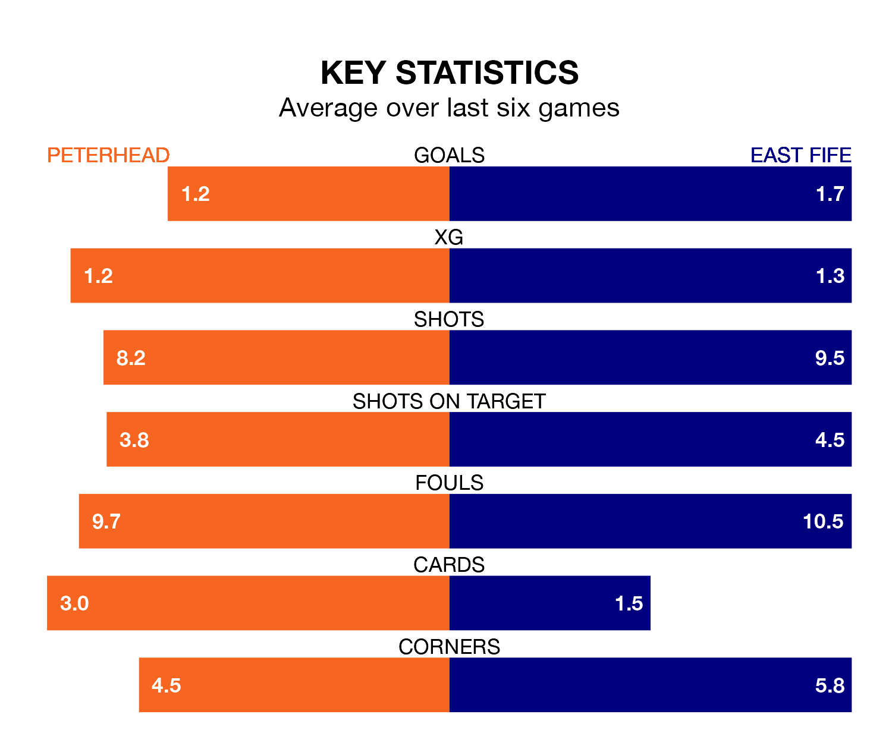

East Fife face Peterhead on Saturday seeking to protect their long unbeaten run in League Two.
The Fifers are unbeaten in five, with three wins and two draws, ahead of the 3pm kick-off.
They face a Peterhead team who have won one and drawn three over the same number of games.
With 44 goals in 28 games so far this season, Peterhead are the league's second-highest scorers with 1.6 goals per game. And they are conceding fewer than average, letting in 30 goals at a rate of 1.1 per game.
East Fife are also above average scorers, with 1.4 goals per game, compared to a league average of 1.3. They have conceded 1.3 goals per game.
The Blue Toon are second in the table after 28 games, of which they have won 13 and drawn seven, earning 46 points.
The Fifers are three places behind the home team in fifth, with nine wins and nine draws putting them on 36 points.
In the last 10 years, Peterhead and East Fife have played each other on 21 occasions. They won eight each, and they drew five times.
On average, the Blue Toon scored 1.1 goals and the Fifers 1.1 in those matches.
Their last meeting was on January 20, when they played out a 2-2 draw.
In Nathan Austin, the visitors have one of the league's most on-form strikers so far this season. He has notched 13 goals in 27 appearances, to sit third in the scoring charts.
His goal rate of one every 166 minutes is quicker than that of Kieran Shanks, Peterhead's top scorer with a goal every 281 minutes, and a total of eight goals in 26 games.
Peterhead's last match was on March 9, a 2-0 win against Stranraer, with Conor O’Keefe and Shanks getting the goals for the Blue Toon.
East Fife beat Dumbarton 3-2 last time out, also on March 9, with Austin (two) and Brian Easton on the scoresheet.
Updated: 15:10 (UTC), 15/03/24